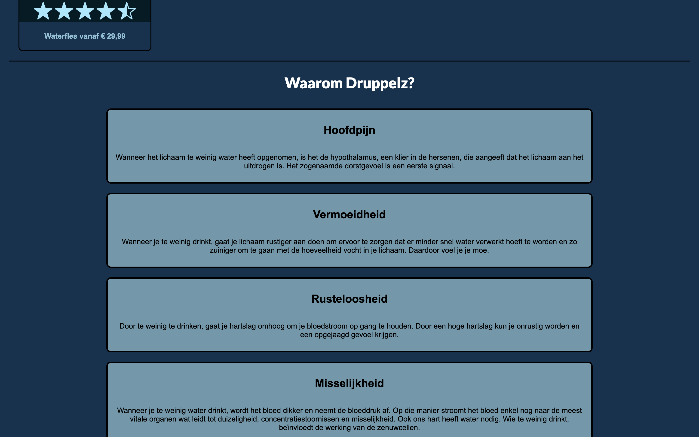
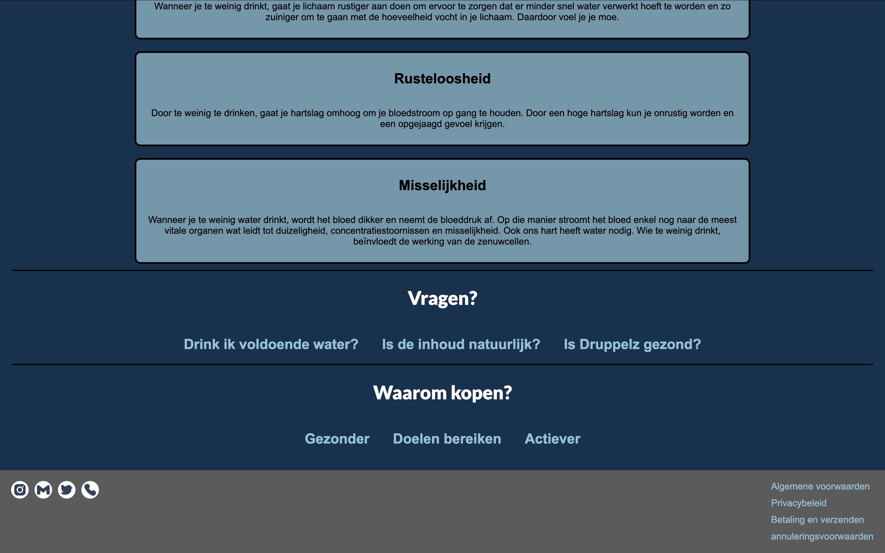

Over het project
In mijn tweede maand als CMGT-student, met slechts twee maanden programmeerervaring, heb ik een promotiewebsite gebouwd met HTML en CSS voor de eindmarkt van ons groepsproject.
In Contextual Learning Environment 1: Create and Code (CLE1), kregen we de opdracht om in MakeCode een product te ontwikkelen met de Adafruit Circuit Playground Express, een microcontroller met een rond LED-display.
Mijn rol was het ontwerpen en bouwen van de promotiewebsite. Hierbij paste ik de basisvaardigheden toe die ik in mijn eerste maand met HTML en CSS had geleerd.
Wat heb ik gedaan?
- Een promotiewebsite gebouwd met HTML en CSS.
- Een aantrekkelijk en gebruiksvriendelijk design gemaakt.
- De website gepresenteerd op de eindmarkt.
Galerij

